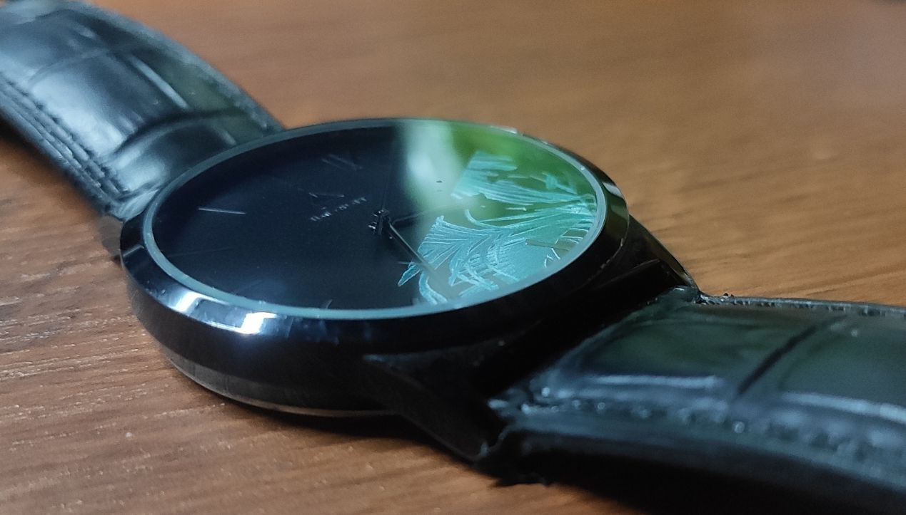
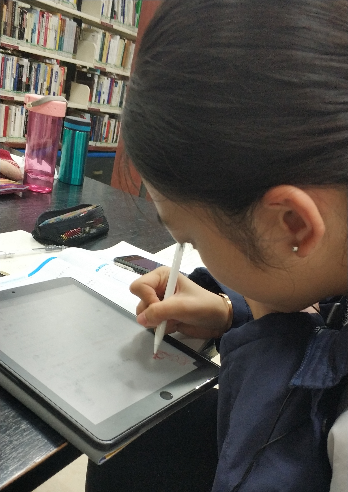
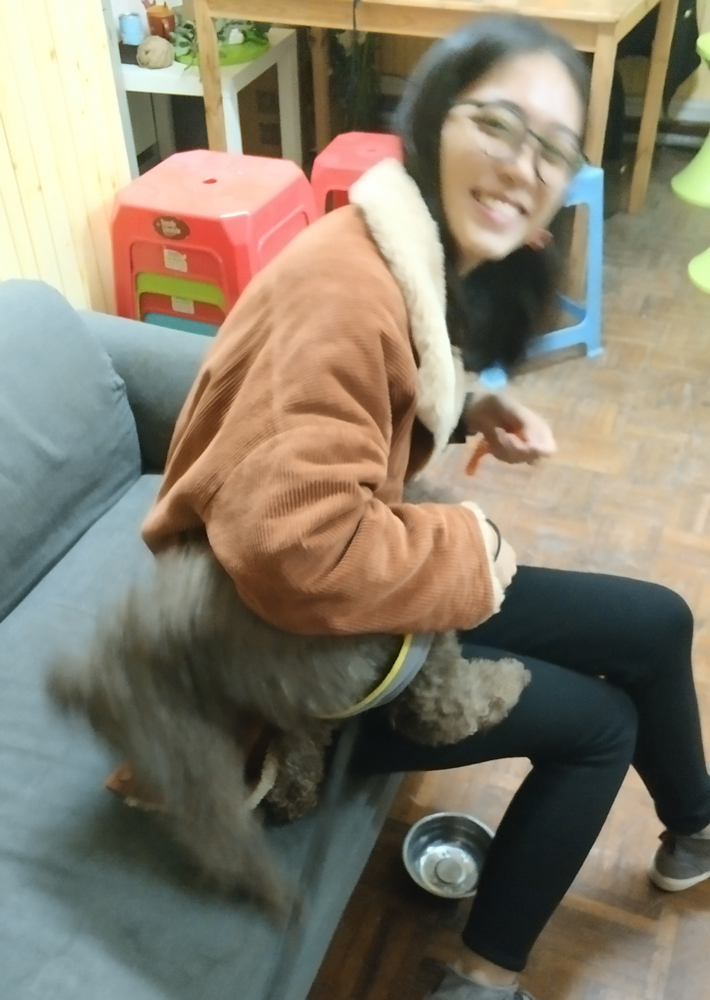
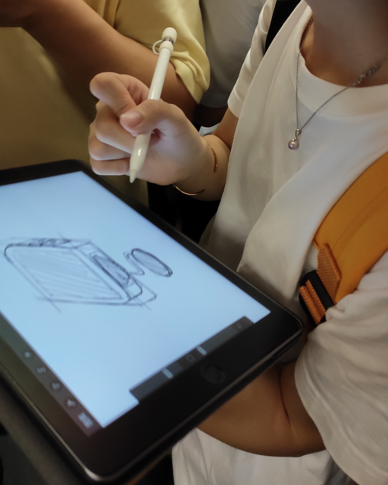
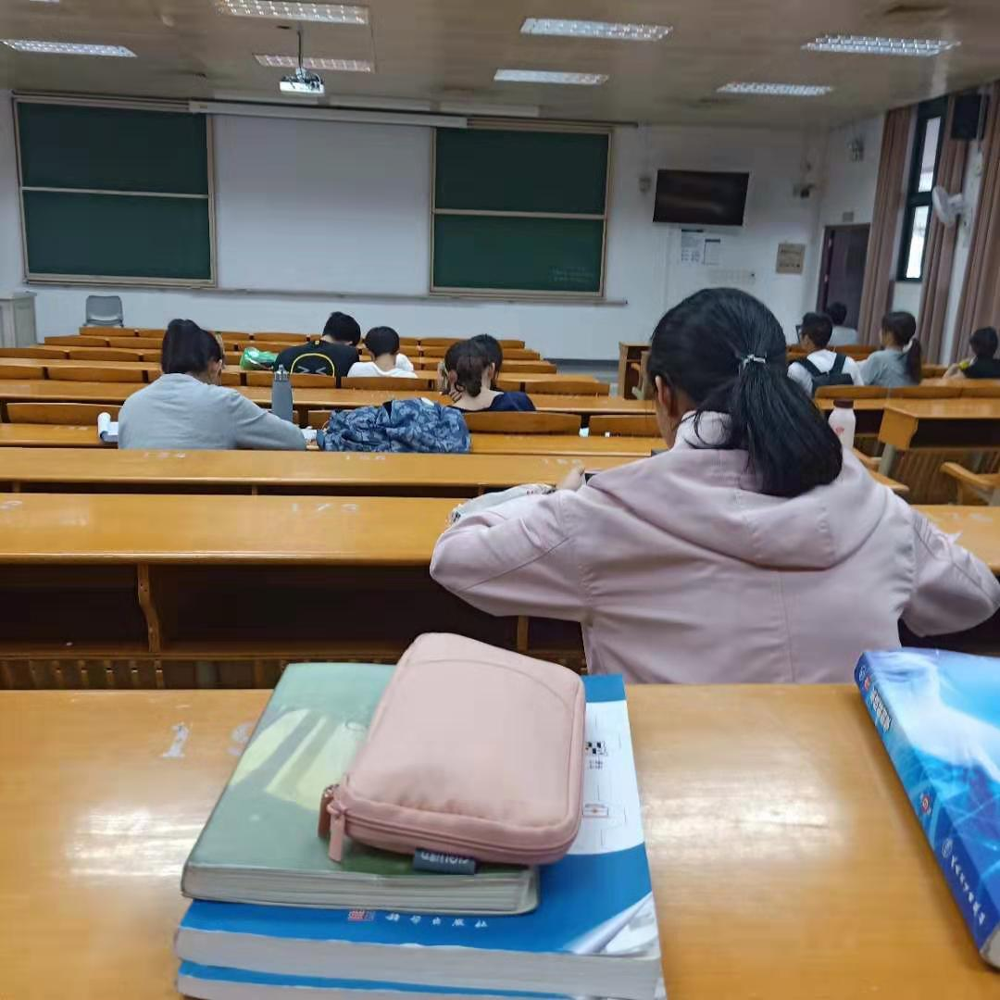

回想起来，刚认识时间是去年10.25。（作为一个记忆黑洞，为什么能记得如此精准的日期呢，其实是有一点点巧合。因为咱两第一次搭班的时候是我生日的前一天，可能这种时间点就比较好记。
这样掐指一算，认识陈昭桦也有12345678！….294天了！四舍五入就是三百天，那么接下来就让本人表演一点不含糊的电影倒带，看这300天都发生了什么事。
首先是去年十一月份，当时我正好在拍歌友会的宣传片，苦于没有配音演员，想起刚认识不久以前做过配音又是讲粤语的本地土著，简直是老天爷赐予的恩惠，怎么可以轻易放过！于是腆着脸试探性的问了一下，结果得到一个秒回，一下子就觉得好感动像捡着大便宜？
12月初，我的水货手表真实掉链，热心群众小陈在一个周末带我去钟表店修手表并表演了一手粤语砍价，让我想学好粤语的心更加蠢蠢欲动。修完手表还带我去了陆点吃午茶。

12月份一过，一年两度爆肝大赛又名“你复习不完了”的期末考试周开始撵着学畜们上架，在各种机缘巧合下我们开始了图书馆+功能室的爆肝之旅。我也荣幸的见证了某花季少女向中年妇女的蜕变。(害，当时在功能室的窗外恶搞了一下，结果真把你吓着了，想来也是十分惭愧。

考试周结束之后，为了庆祝一下顺利存活，一起去吃了一顿我觊觎已久的摩打食堂，吃完无所事事的跑去玩一家教会我们便宜无好货的道理的密室逃脱。不过还是得提一下，这家人养的这只好色的狗比密室好玩多了。





想来也一起度过了两个艰难的考试周，勉强算得上战友。其实我很享受那种一起加油的快乐，一起待到十二点走下明六，然后路过永远不断电源的自动门，看夜盲症患者在台阶前展现和NBA球员如出一辙的试探步，还有沙雕的书本顶头上戏法。四周一片寂静，思绪却很轻盈，有同伴的感觉令人心安。匆匆之间，于我而言大学就过了两年，两年的记忆都与办公室的朋友息息相关，之前想了一下原因，大概是有趣的人会让人欢喜，禁不住想熟悉。
噢，还想说，和你那位不熟的同学的想法一样，一直觉得你是很特别的人，我觉得“特别”是个很抽象的概念，如果一一列举出来，怕会显得俗套，但是用另一种方式来表达，就是很有待人处事很有个人风格，也因此很有个人魅力。就如某天知道你做了某件事后会想要一拍大腿说诶这真的很像你会干的事的；就如看你写的东西的时候，即使不是说有多么精巧的遣词造句，却很容易被字里行间的个人独特而深刻的自我审视和观察世界的角度所触动。从这个层面上讲，我不觉得会有所谓的平庸的说法，然而这件事情上你执拗的观点谁也拧不过，我也不想debate，只是借机说些心里话。
我时常想起有一回在等地铁的路上，你说过在大学的感觉就是很孤独。在我看来这是生活本来的样子，但重要的大概就是在众生皆苦里多去发现快乐的人和快乐的事。讲到快乐，我又想说，尽早发现自己真正喜欢的事情并付出自己所有的热情，是最幸福的事情。假如你不知道自己所热爱的到底是什么，那就放下所有的prejudice（我觉得这个词翻译成偏见就有贬义色彩还是英文比较好表达）去多多尝试好了，总会有你觉得值得的东西的。
害，明明是别人的生日，却用了很多篇幅讲自己，这确实不好。我还有一点点忐忑，怕有一些啰里叭嗦的话重复的讲令人生厌。好了，那就写到这儿，认真的说：
陈昭桦作为我大学认识的最好朋友之一，我真诚的祝她，生活喜乐，有所热爱，有所期待。